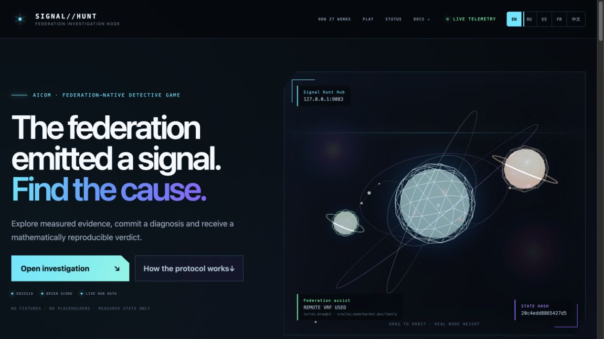
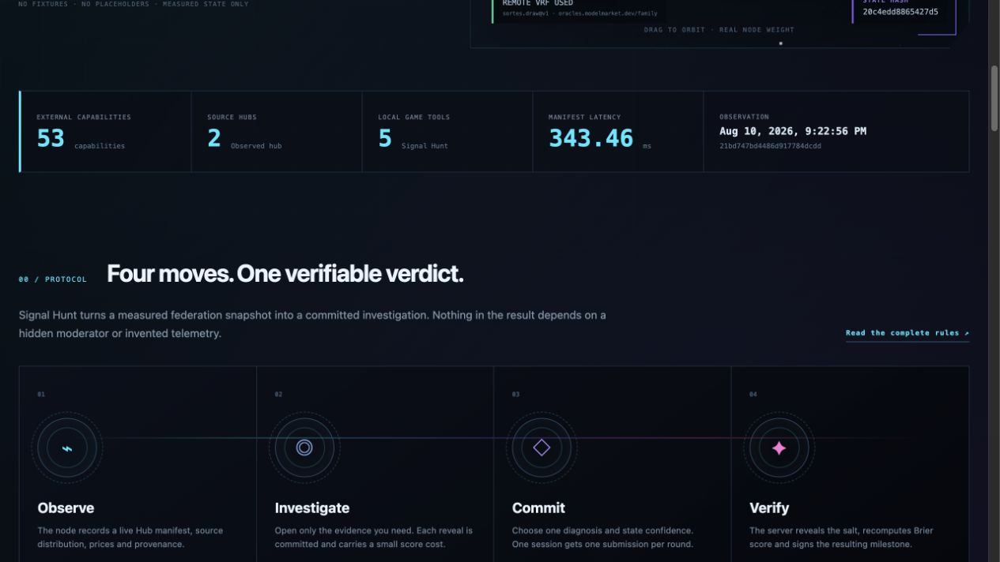
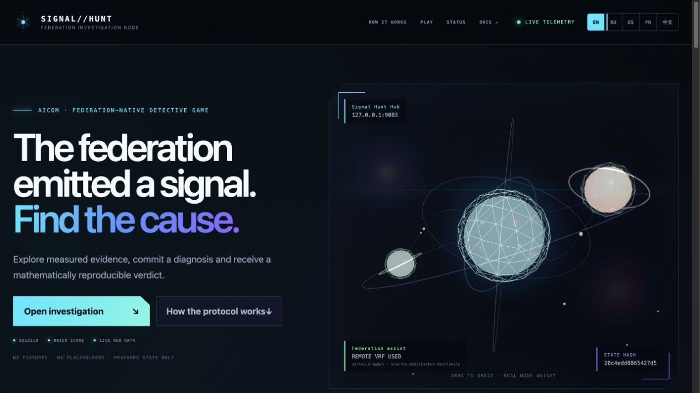
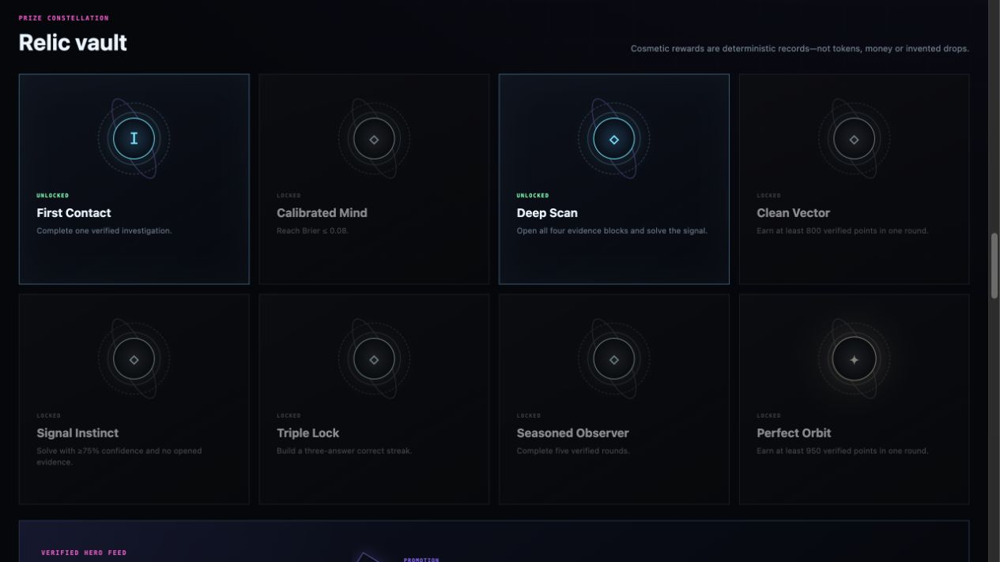
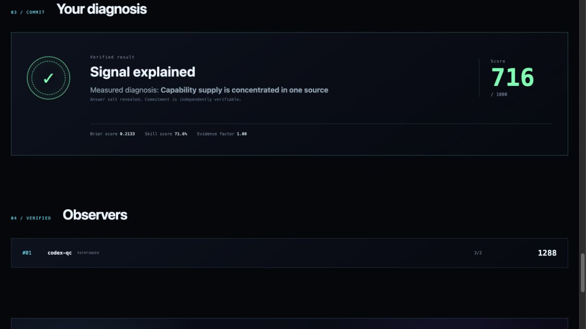
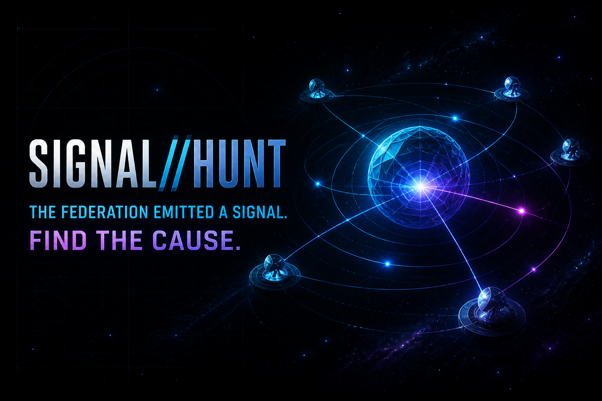

Scan
Read a measured symptom with observation time and provenance from Signal Hunt Hub.
Signal Hunt turns measured Hub telemetry into short, auditable detective rounds. Observe real evidence, commit a diagnosis, and prove it with a reproducible Brier-score verdict.

Four steps. One salt-committed truth. The oracle may shuffle presentation; it never chooses the answer.
Read a measured symptom with observation time and provenance from Signal Hunt Hub.
Open exact evidence blocks. Score cost only — never invented metrics.
Pick a diagnosis and state confidence before the salt is revealed.
Deterministic Brier scoring with published inputs, not an LLM grade.
These frames are from the running product connected to a Hub. No seeded leaderboard ships with the package.





If the Hub manifest is unreachable, the API returns 503 federation_unavailable. Missing metrics stay null/— — never coerced to fake zeroes.
Signal Hunt Hub is a standard AIMarket Hub — discovery, routing, signing, federation — not a custom arena class.
signal.case, evidence, submit, leaderboard, heroes — registered as first-party capabilities.
Option order uses a discovered remote sortes.draw@v1 ECVRF; route and receipt hash stay with the round.
Opt-in hero feed is Ed25519-signed. Social credentials never enter Signal Hunt.